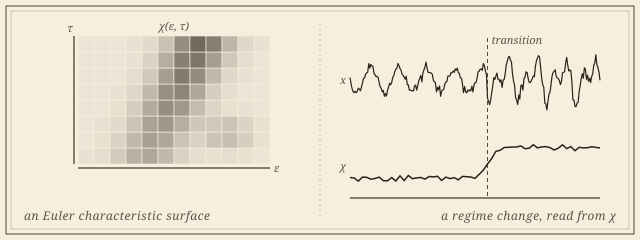

Topology in Time Series & Dynamics
Euler characteristic methods, persistence, and networks for transitions, climate, and markets.

The Euler characteristic is the modest invariant: an alternating sum of simplex counts that, written down, fits on a postcard. Tracked across a filtration it encodes considerably more than the postcard suggests, and it costs a single pass—linear in the size of the complex, where persistence pays for a matrix reduction. The price is that it is not complete; different topologies can share it. The work here makes that trade honestly: Euler characteristic surfaces and profiles as fast, interpretable descriptors, with the Euler calculus and stability theory that say what they can be trusted to see.
Time series and dynamical systems are where they earn their keep. A regime transition, a crash, a monsoon onset is often a change in the shape of the data before it is a change in its mean, and the working assumption throughout is the topologist's: the data is high-dimensional, but the regime is not. The Euler characteristic carries the foundations and the regime-detection work below; the work on markets uses persistence and complex networks, the older tools of the same trade.
Foundations
What the invariant measures, and when to believe it.
The intersection Euler characteristic profile measures how two point clouds overlap: the Euler characteristic of the intersection of their ball unions, as a function of scale, from a single alpha-complex sweep. It is the instrument behind the neural-network work, and it needs its own theory.
- Statistical Inference for Topological Interaction. With Kazuhiro Kawamura, Atish Mitra, and Pramita Bagchi. In preparation.
- The Intersection Euler Characteristic Profile: Euler Calculus and Stability for Topological Interaction of Ball Unions. With Kazuhiro Kawamura and Atish Mitra. Under review at the Journal of Applied and Computational Topology. arXiv.
Time series and regime detection
A transition as a coordinate, not a label.
- Detecting Regime Transitions in Dynamical Systems via the Mixup Euler Characteristic Profile. With Atish Mitra, Santanu Nandi, Md. Nurujjaman, and Buddha Nath Sharma. Under review at Chaos. arXiv. Applied to the onset of the Indian monsoon.
- Interpretable Classification of Time Series Using Euler Characteristic Surfaces. With Buddha Nath Sharma, Vishal Mandal, Salam Rabindrajit Luwang, Md. Nurujjaman, and Atish Mitra. Scientific Reports, 2026. DOI · arXiv.
- Topology of the Polar Vortex and Montana Weather. With Joshua Dorrington, Atish Mitra, James Moukheiber, Demi Qin, Jacob Sriraman, and Kristian Strommen. ATMCS 2025. arXiv.
- Detecting the Indian Monsoon Using Topological Data Analysis. With Enrique Alvarado, Daniela Beckelhymer, Joshua Dorrington, Tung Lam, Jasmine Noory, María Sánchez Muniz, and Kristian Strommen. ATMCS 2025. arXiv.
Markets
The moods of the stock market, read topologically.

A long collaboration with Md. Nurujjaman’s group at NIT Sikkim carries persistence and network methods into statistical finance: which crashes are extreme, how a crash propagates across sectors and commodities, and why, after COVID-19, not every sector recovered along the same curve.
- Causality Analysis of COVID-19 Induced Crashes in Stock and Commodity Markets: A Topological Perspective. With Buddha Nath Sharma, Anish Rai, Salam Rabindrajit Luwang, and Md. Nurujjaman. International Journal of Modern Physics C, 2025. DOI · arXiv.
- Complex Network Analysis of Cryptocurrency Market During Crashes. With Kundan Mukhia, Anish Rai, Salam Rabindrajit Luwang, Md. Nurujjaman, and Chittaranjan Hens. Physica A, 2024. DOI · arXiv.
- Identifying Extreme Events in the Stock Market: A Topological Data Analysis. With Anish Rai, Buddha Nath Sharma, Salam Rabindrajit Luwang, and Md. Nurujjaman. Chaos, 2024. DOI · arXiv.
- A Sentiment-Based Modeling and Analysis of Stock Price During the COVID-19: U- and Swoosh-Shaped Recovery. With Anish Rai, Ajit Mahata, Md. Nurujjaman, and Kanish Debnath. Physica A, 2022. DOI · arXiv.
Collaborators
From Gangtok to Butte to Tsukuba.
- Atish Mitra, Montana Technological University
- Kazuhiro Kawamura, University of Tsukuba
- Md. Nurujjaman, National Institute of Technology Sikkim
- Pramita Bagchi, The George Washington University
- Buddha Nath Sharma, Salam Rabindrajit Luwang, Anish Rai, Vishal Mandal, Santanu Nandi
- Kundan Mukhia, Chittaranjan Hens, Ajit Mahata, Kanish Debnath
- Joshua Dorrington, Kristian Strommen, and the ATMCS climate teams